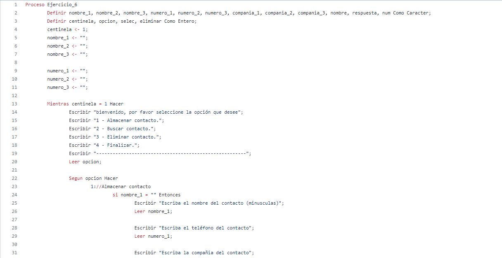
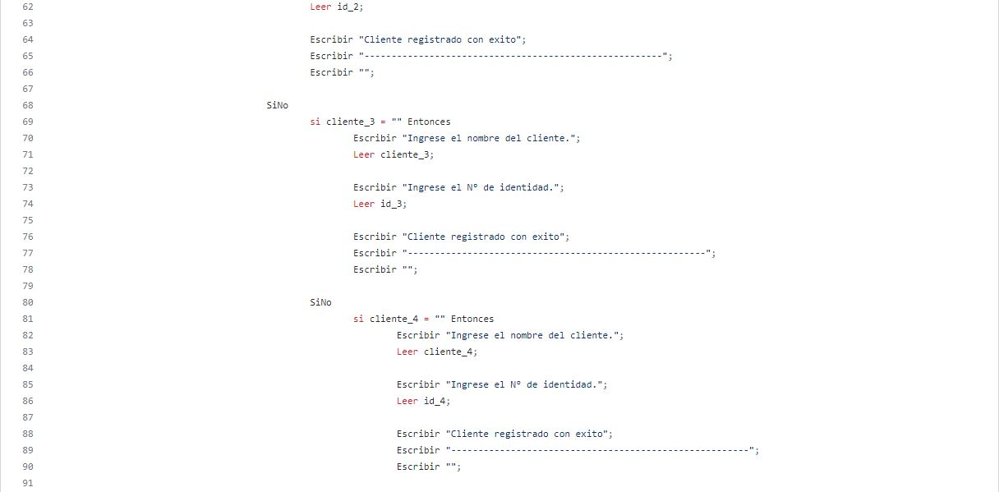
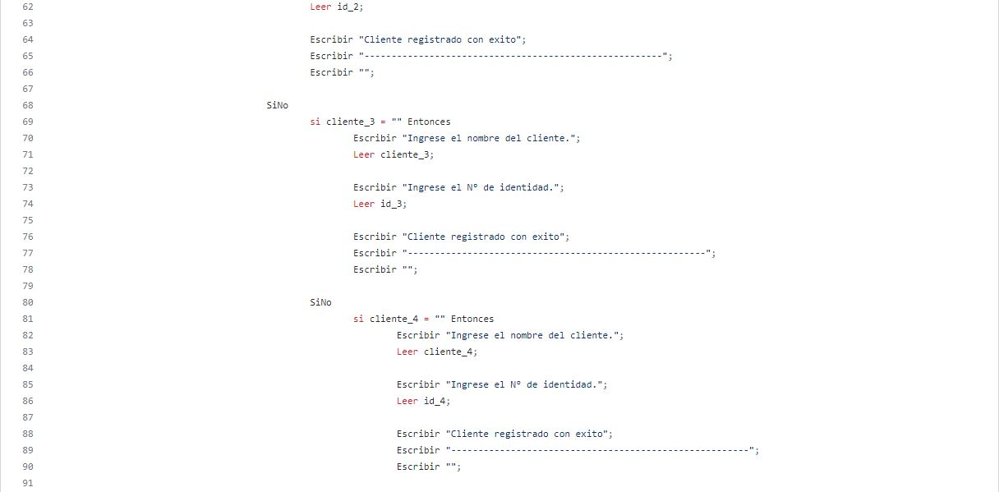

Taller de ciclos
Realizar la siguiente figura por medio del ciclo Para.
Realizar la siguiente figura por medio del ciclo Mientras - Hacer.
Realizar la siguiente figura por medio del ciclo Repetir - Hasta Que.

Se requiere un programa que pueda crear la tabla de multiplicar del número que el usuario indique por medio del ciclo Para; esta debe ser impresa del 1 al 10. Ejemplo, si el usuario indica que desea crear la tabla del 5, entonces el resultado debería ser el siguiente:
Utilizando el ciclo que usted desee, crear un menú de ejecución infinita hasta que el usuario desee terminar dicho ciclo.
Se está creando una aplicación que va a estar conectada con un prototipo que permita almacenar contactos telefónicos en el dispositivo. Para ello cada contacto debe contener nombre completo, teléfono y organización. Se requiere que la aplicación permita añadir 3 contactos verificando que el número no esté almacenado, buscar contactos almacenados y eliminar contactos si el usuario lo requiere. Recuerde que el sistema debe terminar cuando el usuario así lo indique.

El parqueadero "El guardián" presta sus servicios de parqueadero nocturno para los usuarios del barrio y requiere una aplicación que permita registrar los vehículos que se cuidan en estas instalaciones. Se sugiere que el parqueadero tenga los atributos del vehículo como son, placa y marca, y los datos del cliente como son nombre completo y número de teléfono. Para cada vehículo se debe permitir la opción de ingresar al parqueadero, retirar del parqueadero y consultar si un vehículo se encuentra en el parqueadero. Recuerde que el sistema debe terminar cuando el usuario así lo indique. Tenga en presente que el parqueadero solo puede almacenar máximo 5 vehículos.

La escuela automovilística "El Maestro" requiere una aplicación que permita registrar a sus clientes en los cursos de enseñanza automovilística y establecer quienes lo han aprobado para continuar con el trámite de adquirir la licencia de conducción. Para cada usuario se debe permitir registrar su ingreso al curso, consultar usuarios que hayan presentado el curso y resultados de la prueba del curso (si fueron aprobados o no). Recuerde que el sistema debe terminar cuando el usuario así lo indique. Tenga presente que la escuela tiene capacidad máxima de gestionar 8 usuarios en su totalidad.
 
